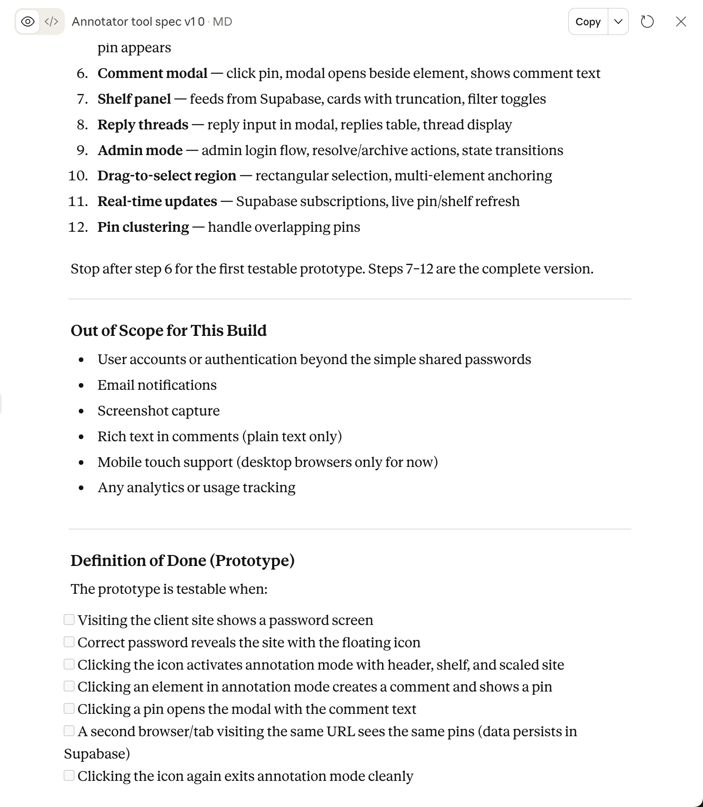
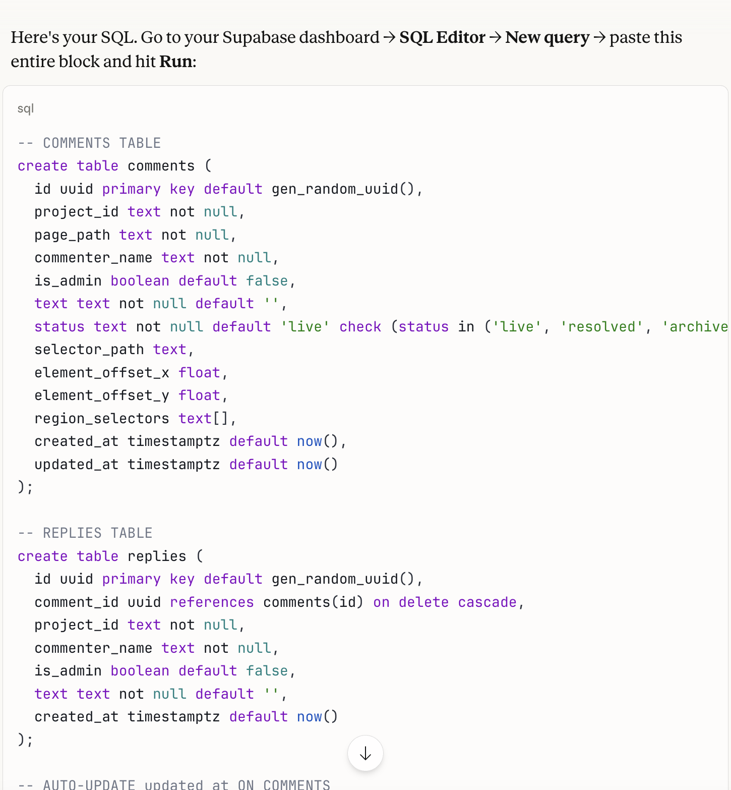
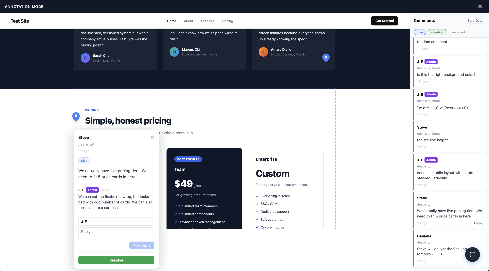
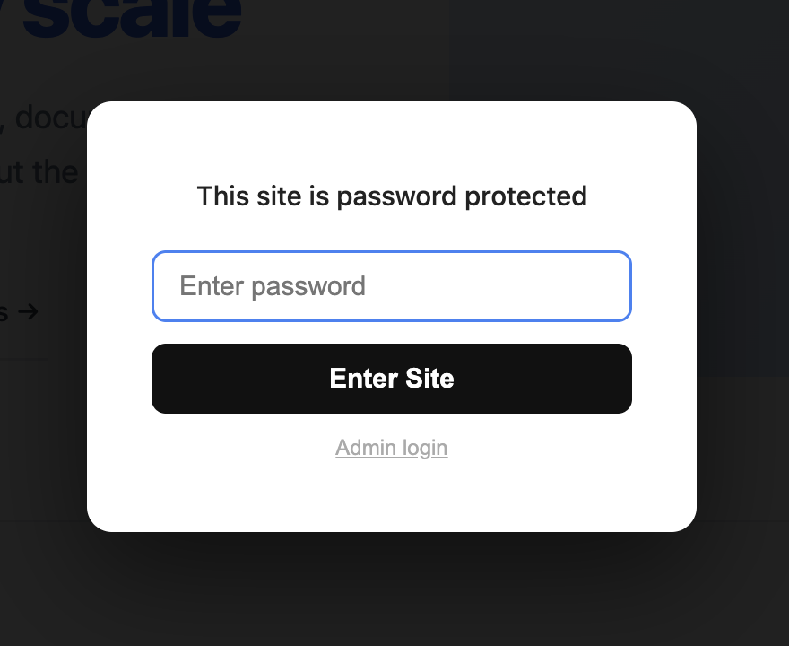
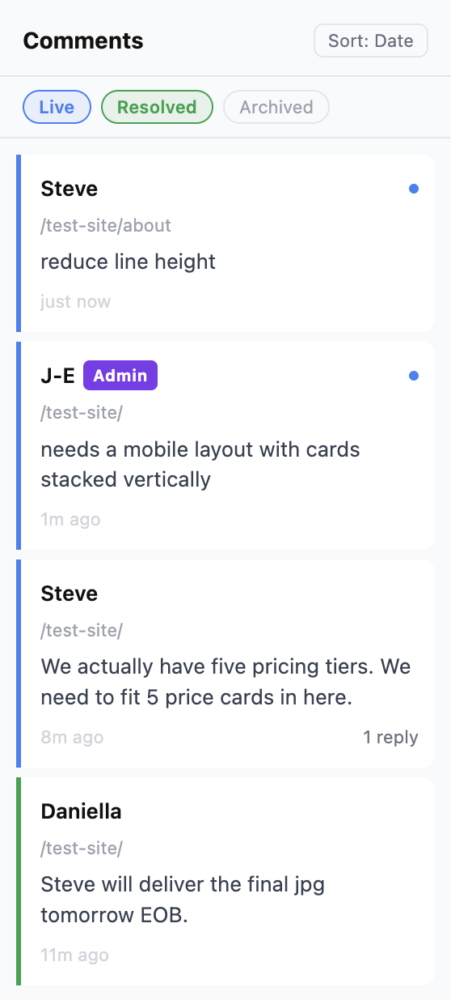
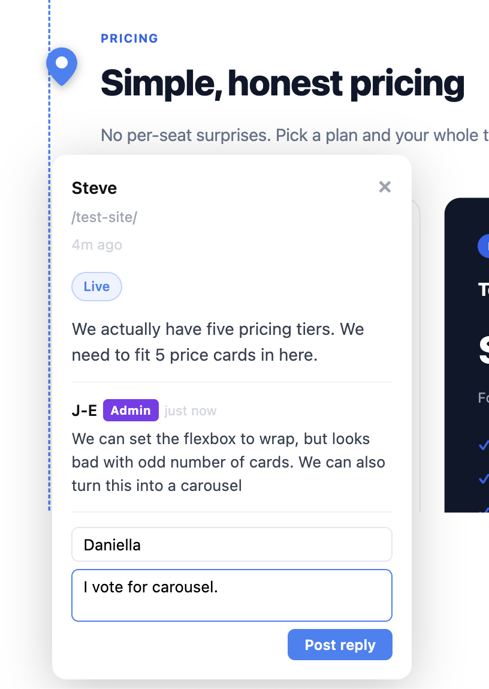
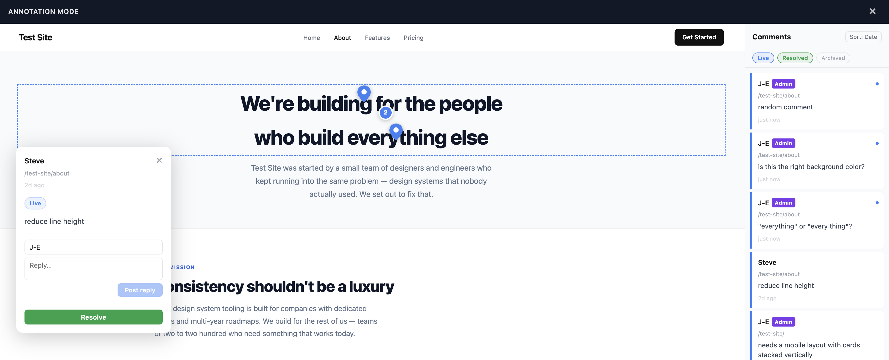

A bespoke staging feedback tool, built in three afternoons.
Once a design leaves Figma, feedback collection falls apart — email threads, Slack messages, CMS comments, screenshots in documents. I built Design Annotator to fix that.
The Challenge
The Feedback Black Hole
The moment a design leaves Figma, the tidy commenting workflow disappears. What replaces it is five things at once: email threads that lose context, Slack messages that get buried, meeting notes disconnected from specific elements, CMS comment fields nobody checks, and bug reports nobody reads until the next sprint. Feedback arrives fragmented, or not at all.
The Paid Tool Problem
Tools like Marker.io, Pastel, and BugHerd exist for this — they just cost $50–100/month and require every stakeholder to create an account before leaving a single note. For a solo practitioner or small agency, that's the wrong trade-off. Onboarding friction is not a great first impression.
The Specific Trigger
A new client website project made the problem concrete. I needed non-technical stakeholders to leave element-specific feedback on a staging site — no accounts, no onboarding, no feedback disappearing into email. No existing tool fit those constraints at a sensible price.
My Approach
I treated this as a design problem before opening a code editor. That decision is what made three afternoons sufficient.
Phase 1: Speccing Before Building (Afternoon 1)
I used Claude to interrogate every design and architecture decision before writing a line of code.
Key decisions made during the spec phase:
- Architecture: A JavaScript snippet injected into any site's
<head>— not an iframe wrapper, not a browser extension. Maximally portable and invisible to the site's own codebase. - Backend: Supabase (free tier) for comment persistence and real-time sync. Chosen over GitHub-as-database (fragile, race conditions) and Netlify Functions (no native persistence).
- Auth model: Shared site password for all clients (no accounts, no onboarding), separate admin password for resolve/archive actions. Both stored in localStorage after first entry.
- Comment states: Three states — Live, Resolved, Archived — rather than the binary open/closed most tools use. Preserves a full audit trail while keeping the active view clean.
- DOM anchoring: Comments anchor to CSS selector paths, not pixel coordinates, so pins remain accurate when the browser is resized or the viewport changes.
- Scope boundary: A six-step prototype milestone defined explicitly, so the build session had a clear stopping point and wouldn't sprawl.
The output was a complete spec — detailed enough that Claude Code could build without hitting a single undecided question.

The build spec in Claude — each step ordered so there was always something testable
Phase 2: Database Setup (Afternoon 1, continued)
Before opening Claude Code, I ran the Supabase schema SQL directly — two tables, RLS policies, real-time enabled, indexes. Claude Code connected to a live database immediately, rather than spending build time on infrastructure.

Schema SQL run directly in Supabase before the build session began
Phase 3: Building the Prototype (Afternoon 2)
With the spec and live database ready, Claude Code built in sequence:
- Password screen with localStorage persistence
- Floating feedback icon, annotation mode toggle
- Annotation mode layout — scaled site view, header bar, shelf panel placeholder
- Supabase connection, comment insert and read
- Single-click comment creation — element highlight, input card, auto-save on first keystroke, live pin
- Comment modal — opened by clicking a pin, positioned beside the target element
Stopping point: A visitor could authenticate, enter annotation mode, click any element, leave a comment, and see it persist in real time on any device.
Phase 4: Security Review Before Client Deployment (Afternoon 3)
Before applying the tool to a real client site:
- Audited the public-facing readme (documentation only — no real credentials)
- Added CORS restrictions so
annotator.jscan only load from known client URLs - Confirmed the anon key's threat model (Supabase RLS is the actual security layer)
- Rotated test passwords, set production credentials
- Validated the full flow in incognito as a first-time client user
Testing during this phase also surfaced two bugs, fixed on the spot:
- Pin clustering: Multiple comments on the same element produced overlapping pins. Fixed with a numbered cluster pin that expands into a comment list on click.
- Cross-page navigation: Clicking a shelf card for a comment on a different page did nothing. Fixed so the shelf navigates to the correct page and scrolls to the anchored element.
Treating security review as a named phase — not an afterthought — is what makes it actually happen. The bug fixes were a bonus.
The Solution
Design Annotator is a JavaScript snippet — two script tags in a site's <head> — that adds a complete annotation layer to any website without touching the site's codebase.

Annotation mode — header bar, shelf panel, threaded comment modal, and DOM-anchored pin, all on top of an unmodified staging site
How it works:
- Visitors see a password screen before any site content is visible
- After authentication, a floating feedback icon sits in the bottom-right corner
- Clicking the icon activates Annotation Mode: the site scales down, a header bar appears, and a shelf panel opens showing all comments in a chronological activity feed, with location pins over commented elements
- Clicking any element creates a comment anchored to that DOM element — accurate across viewport sizes and browser resizes
- Each comment supports threaded replies — the full conversation lives inline, managed from the comment management panel
- Comments sync in real-time across all open sessions via Supabase
- Overlapping pins cluster into a numbered group; clicking expands a list of the stacked comments
- Clicking a shelf card for a comment on a different page navigates there and scrolls to the anchored element
- Admin mode (separate password) unlocks resolve and archive actions, preserving a full audit trail

Client entry point — one password field, no account required

Shelf feed — filterable by status, navigable across pages

Threaded replies — the full conversation inline on the element

Pin clustering — overlapping comments grouped, not stacked
Key decisions that worked:
- → Spec before code — No ambiguous decision points in the build session. Claude Code executed rather than improvised.
- → DOM anchoring over pixel coordinates — Pins stay accurate when clients resize their browser or switch devices.
- → Three-state comment model — Live → Resolved → Archived preserves a full audit trail without cluttering the active view.
- → No accounts — Shared password, no sign-up. Clients open a link, enter a password, and they're in.
- → Security as a named phase — Treating the pre-deployment review as a project phase meant it actually happened.
Try the live tool: design-annotator.netlify.app ↗
The Results
What Was Built
A production-ready staging annotation tool: password protection, real-time sync, DOM-anchored pins, pin clustering, threaded replies, a chronological shelf feed, cross-page navigation, three-state comment management, and admin controls — deployed to Netlify and reusable across any client project.
Replacing Paid SaaS
Replaces Marker.io, Pastel, and BugHerd — which charge $50–100/month and require stakeholder accounts — with a bespoke tool I own, control, and can extend.
Ongoing cost: $0 (Netlify + Supabase free tiers).
Time to Working Prototype
Three afternoons from concept to live, tested, production-ready tool — including spec, database setup, build, and security review.
This section will be updated after the tool's first full client project cycle.
Next Steps
Design Annotator is actively developed. Planned additions:
JIRA Integration
Convert any comment — with its DOM selector context — directly into a bug ticket or feature request, pre-populated with element information and a link back to the staging page.
Slack / Teams Integration
Push notifications to a dedicated channel when new comments are added, so the team doesn't need to actively monitor the tool.
Email Notifications
For stakeholders who aren't in Slack — ensuring no comment goes unnoticed regardless of how the team communicates.
Key Takeaways
1. Spec work is design work
Spending the first afternoon on architecture decisions and a detailed build spec — rather than opening a code editor — is what made three afternoons sufficient.
2. AI as a thinking partner, not just a code generator
The most valuable AI interactions were structured conversations about requirements and edge cases — not the code generation itself. Claude Code is fast. The spec work is what made it accurate.
3. Owning your tools has compounding value
A bespoke tool can be extended in ways a SaaS subscription cannot. JIRA integration, Slack notifications, and client-specific customisation are all on the roadmap.
4. Security is a design problem
The admin password model, what the public readme exposes, CORS restrictions — these are all design decisions. Treating the security review as a named phase is what makes it actually happen.
5. Fifteen years of pain is good product research
I've encountered the fragmented staging feedback problem across editorial, agency, and product roles for fifteen years. That lived context made the requirements clear before any stakeholder interviews were needed.